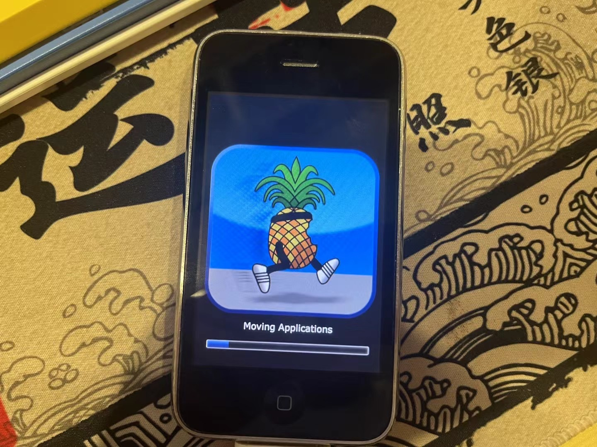
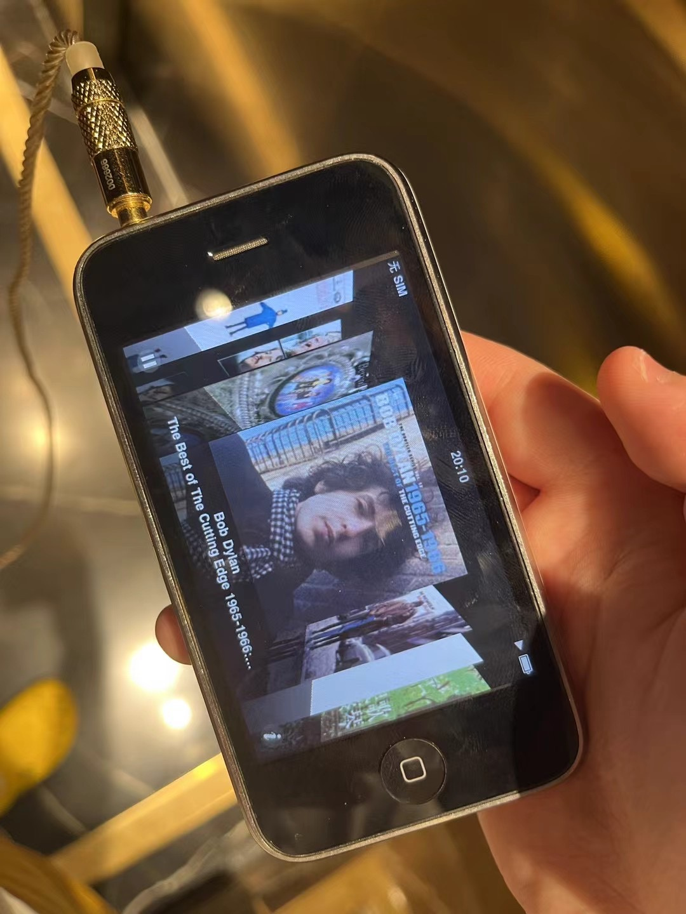
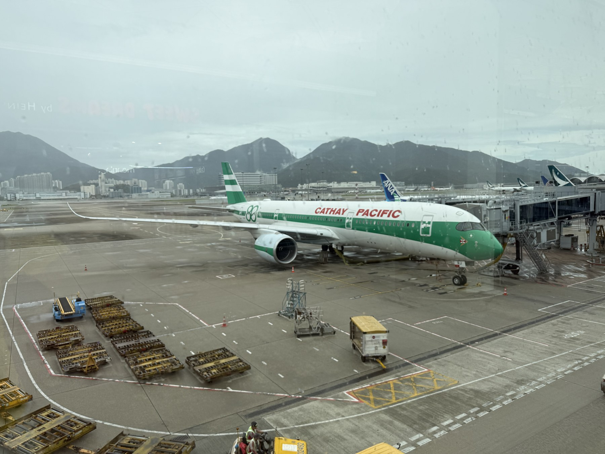
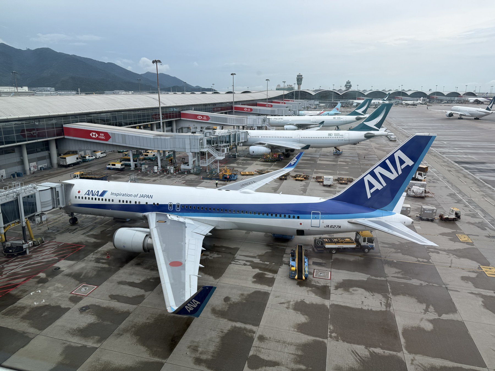
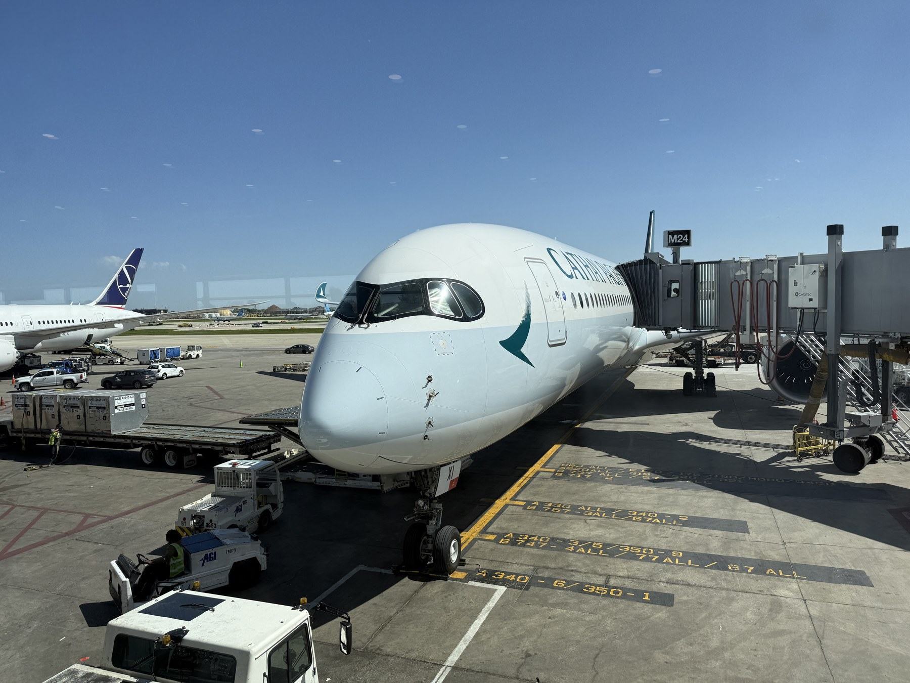

Tinkering
iPhone 3GS & early iOS
I brought my iPhone 3GS back from iOS 6.1 to iOS 4.1 and jailbroke it with Cydia. I especially love the skeuomorphic details of early iOS, including Cover Flow.
See the jailbreak process


Devices I love, things I tinker with, and airplanes I've photographed.
Tinkering
I brought my iPhone 3GS back from iOS 6.1 to iOS 4.1 and jailbroke it with Cydia. I especially love the skeuomorphic details of early iOS, including Cover Flow.


A favorite phone
Mine is silver, and it's one of my favorite small phones.
Hi-Fi Audio
One of my favorite pairs of earphones.
Aviation
I have a soft spot for the Boeing 737-200: its slim little engines make it look especially cute to me. I also collect aircraft models and enjoy photographing the airplanes I come across.


